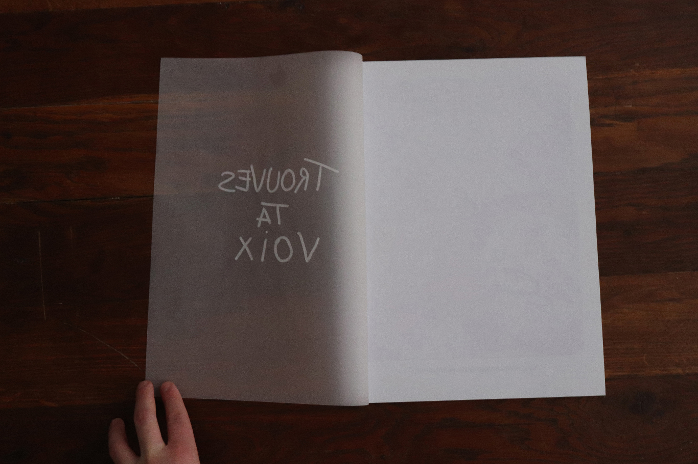
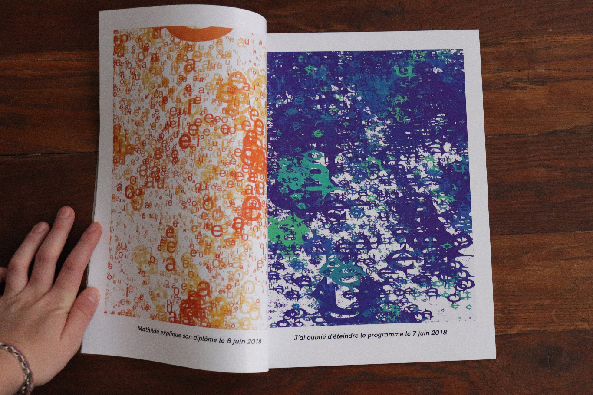
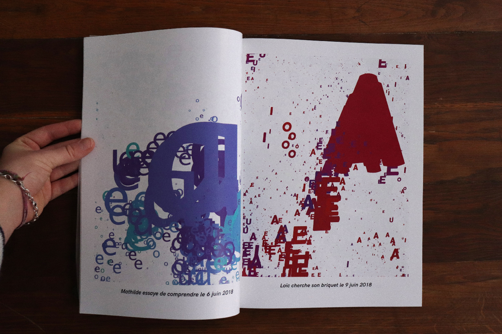
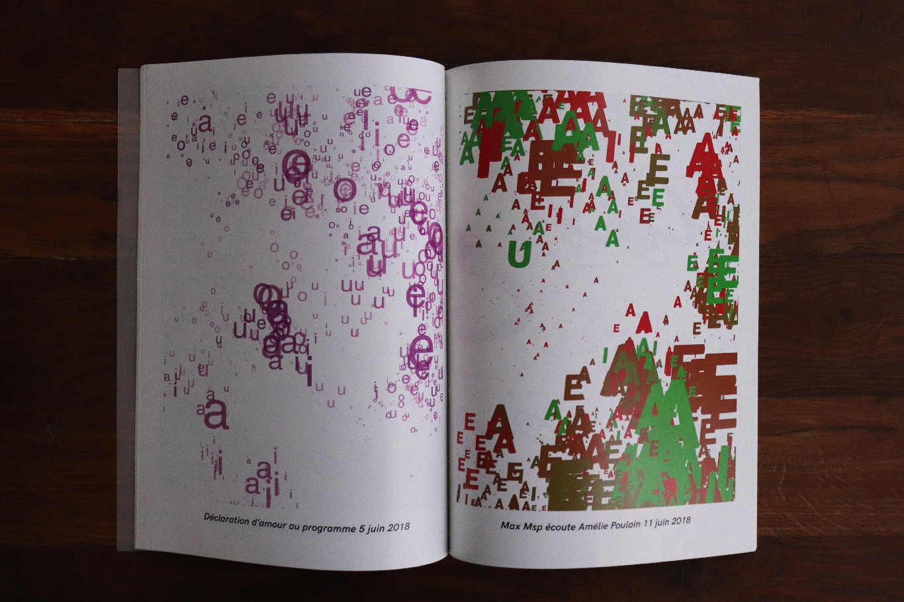
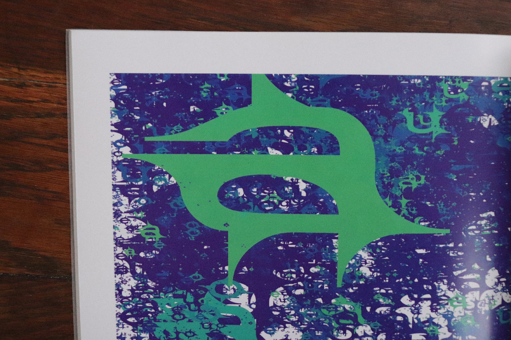
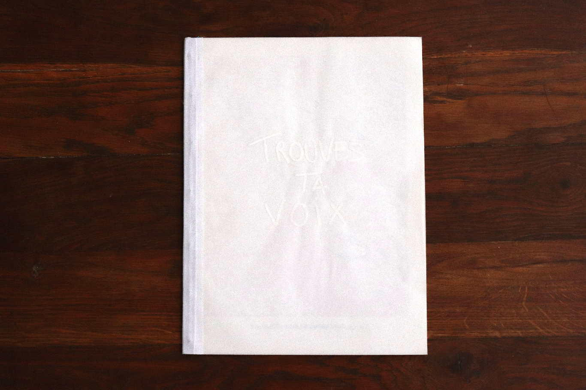

Programming of a tool to transcribe voices into images. The voice is interpreted by the program according to
several parameters
that can be varied: frequency, volume, speed and time of speech. Creation and digital interpretation of sound
poetry





